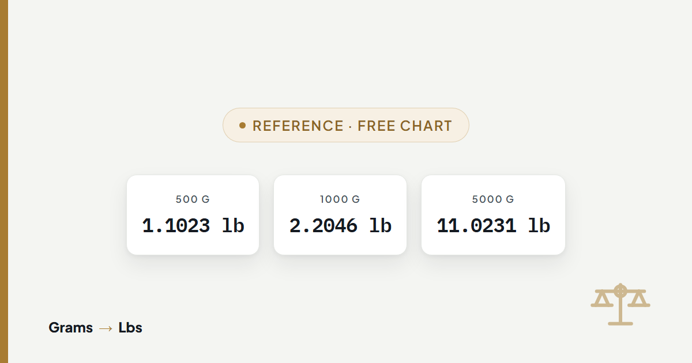

Grams to Pounds Conversion Chart (1 g to 10,000 g)
A single reference table covering 100 grams to 10,000 grams, so you can look up a value directly instead of calculating it.

This chart converts grams to pounds from 100 g to 10,000 g in one table, so a value can be looked up directly instead of calculated. Every figure uses the exact factor of 453.59237 grams per pound, the same figure the grams to lbs converter uses for any value not listed here.
The quick answer for the most-searched values
These four come up more than any other value. Each is shown as decimal pounds and as pounds with ounces, because "1.1023 pounds" and "1 lb 1.64 oz" describe the same weight and people search for both forms.
Full grams to pounds conversion chart
The table runs in 100 gram steps to 1,000 g, then 500 gram steps to 5,000 g, then 1,000 gram steps to 10,000 g. For anything between two rows, the converter gives an exact figure at any value.
| Grams (g) | Pounds (lb) | Pounds & ounces |
|---|---|---|
| 100 g | 0.2205 lb | 0 lb 3.53 oz |
| 200 g | 0.4409 lb | 0 lb 7.05 oz |
| 300 g | 0.6614 lb | 0 lb 10.58 oz |
| 400 g | 0.8818 lb | 0 lb 14.11 oz |
| 500 g | 1.1023 lb | 1 lb 1.64 oz |
| 600 g | 1.3228 lb | 1 lb 5.16 oz |
| 700 g | 1.5432 lb | 1 lb 8.69 oz |
| 800 g | 1.7637 lb | 1 lb 12.22 oz |
| 900 g | 1.9842 lb | 1 lb 15.75 oz |
| 1000 g | 2.2046 lb | 2 lb 3.27 oz |
| 1500 g | 3.3069 lb | 3 lb 4.91 oz |
| 2000 g | 4.4092 lb | 4 lb 6.55 oz |
| 2500 g | 5.5116 lb | 5 lb 8.18 oz |
| 3000 g | 6.6139 lb | 6 lb 9.82 oz |
| 3500 g | 7.7162 lb | 7 lb 11.46 oz |
| 4000 g | 8.8185 lb | 8 lb 13.10 oz |
| 4500 g | 9.9208 lb | 9 lb 14.73 oz |
| 5000 g | 11.0231 lb | 11 lb 0.37 oz |
| 6000 g | 13.2277 lb | 13 lb 3.64 oz |
| 7000 g | 15.4324 lb | 15 lb 6.92 oz |
| 8000 g | 17.6370 lb | 17 lb 10.19 oz |
| 9000 g | 19.8416 lb | 19 lb 13.47 oz |
| 10000 g | 22.0462 lb | 22 lb 0.74 oz |
How to read a value that isn't in the chart
Divide the grams by 453.59237 to get decimal pounds, then multiply the remainder after the decimal point by 16 to get ounces. Here is 750 grams, a value between two rows in the chart above:
750 ÷ 453.59237 = 1.6535 lb
whole pounds → 1 lb
0.6535 × 16 = 10.46 oz
result → 1 lb 10.46 oz
whole pounds → 1 lb
0.6535 × 16 = 10.46 oz
result → 1 lb 10.46 oz
The converter does this calculation for any number instantly, with a choice of 2, 4 or 6 decimal places.
A chart for your specific situation
This page is a general reference table. Four situations have their own guide with a worked example and a table sized for that specific use:
Baby birth weight
Grams to pounds and ounces from 1,000 g to 5,000 g, the range hospitals record birth weight in.
Read the guide →Gold and troy ounces
Precious metals use a different ounce. This chart uses ordinary pounds only — see why that matters for gold.
Read the guide →Shipping weight
Carriers round up to the next whole pound. See exactly where each pricing bracket starts.
Read the guide →Food labels
Why a 500 g pack and a 1 lb pack are not the same size, and how to convert package weights.
Read the guide →Frequently asked questions
How do I convert grams to pounds without a calculator?
Use this chart for common values, or round 453.59237 to 454 and divide by that for a close estimate. 1,000 grams divided by 454 gives roughly 2.203 pounds, close to the exact 2.2046. For an exact figure, use the converter or divide by 453.59237 directly.
Is there a simple formula for grams to pounds?
Yes: pounds equals grams divided by 453.59237. That single division is the entire formula, because one pound is defined as exactly 453.59237 grams. Multiplying pounds by 453.59237 converts back to grams.
What is 500 grams in pounds and ounces?
500 grams is 1 pound 1.64 ounces, or 1.1023 pounds as a decimal. Both describe the same weight; the pounds-and-ounces form is closer to how the value is normally spoken.
How many grams are in a whole number of pounds, like 5 pounds?
5 pounds is 2,267.96 grams, calculated as 5 multiplied by 453.59237. Each whole pound adds another 453.59237 grams, so 10 pounds is 4,535.92 grams and 20 pounds is 9,071.85 grams.
Why do some grams to pounds charts show slightly different numbers?
Rounding. 1,000 grams is 2.2046 pounds at four decimal places and 2.204623 pounds at six; both are correct, just stopped at a different point. The underlying factor of 453.59237 grams per pound is exact and identical on every accurate chart.
Does this chart work for any substance, like gold or flour?
Yes for ordinary weight. Grams and pounds both measure mass, so 500 grams of flour and 500 grams of lead are both 1.1023 pounds. The one exception is precious metals, which are priced in troy ounces rather than ordinary pounds; see the gold and troy ounces guide for that conversion.
Sources
- NIST Special Publication 811, Guide for the Use of the International System of Units (SI) — exact conversion factors
- International Yard and Pound Agreement, 1959 — defines the international avoirdupois pound as exactly 453.59237 g